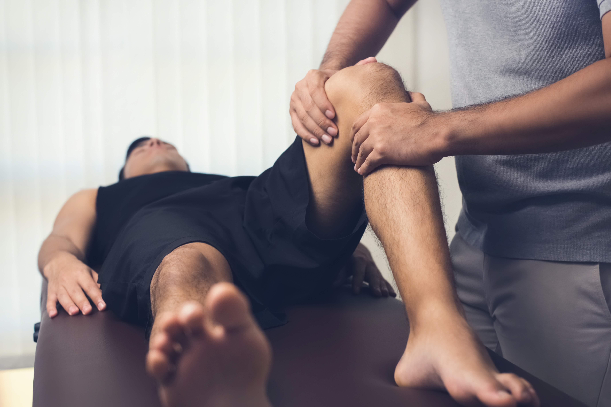
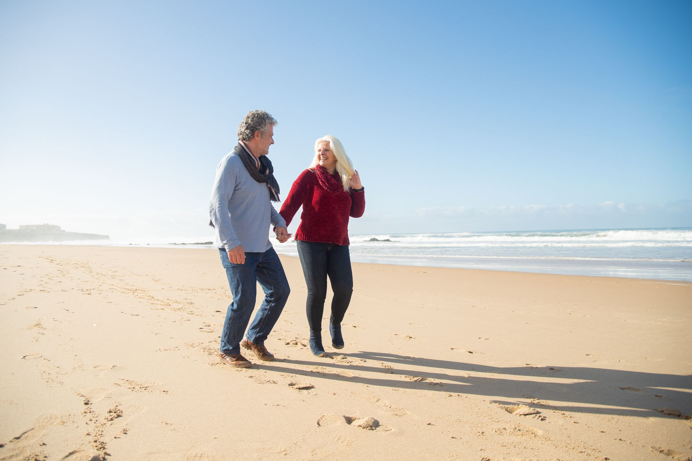
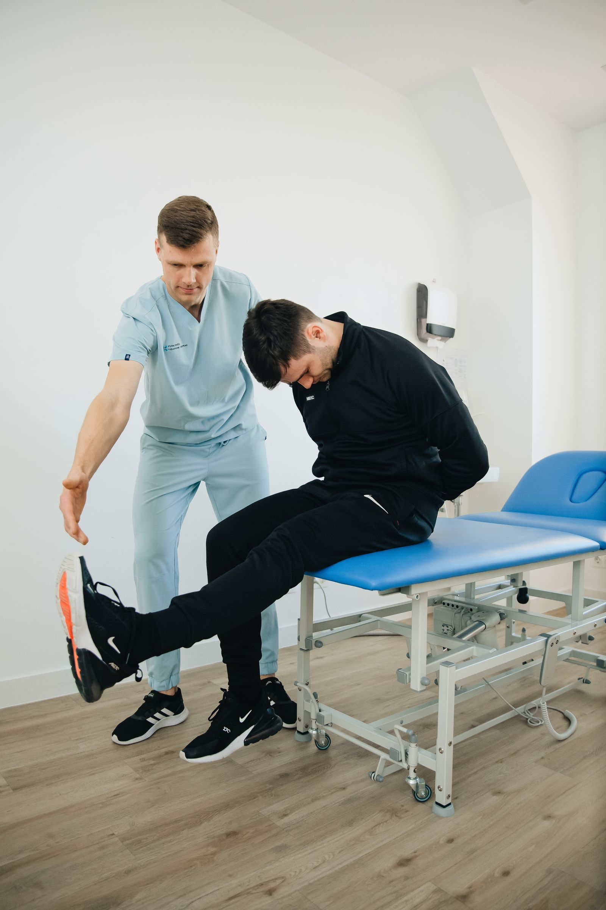

CARE THAT CONNECTS TO YOUR LIFEHIP & KNEE CARE
For the steps still ahead.
Explore hip and knee care, including joint replacement, with the BOSS team.
Explore this specialtyORTHOPAEDICS · SPORTS MEDICINE · PHYSICAL THERAPY
From the everyday moments to the things you love most. Take the next step with BOSS Orthopaedics.
Rooted in the Lowcountry.
Here for your life in motion.

SPECIALIZED CARE. A PERSONAL NEXT STEP.
Explore a specialty to see where your care can begin. We’ll help you find the next step.

CARE THAT CONNECTS TO YOUR LIFEHIP & KNEE CARE
Explore hip and knee care, including joint replacement, with the BOSS team.
Explore this specialty
THE EVERYDAY IS WORTH GETTING BACK TO.THE HUMAN SIDE OF ORTHOPAEDICS
A good next step begins with being heard. Explore your options with a team that brings orthopaedics, sports medicine, and physical therapy together.
From the first conversation to the work of recovery, the goal is personal: helping you move toward the life you want to live.
Care is about more than an appointment.
It’s about what comes after.
WHEN YOU NEED A NEXT STEP
The current BOSS website lists 3–7 pm hours. Call to confirm current days, availability, and whether the clinic is appropriate for your needs.
Call 843-837-4320YOUR LOWCOUNTRY. YOUR BOSS TEAM.
Choose an orthopaedic office to find contact information and directions.
1076 Ribaut Road, Suite 101
Beaufort, SC 29902
4812 Bluffton Parkway
Bluffton, SC 29910
39 Hospital Center Commons, Second Floor
Hilton Head Island, SC 29926
A LITTLE CLARITY BEFORE YOU COME IN
Call the BOSS office nearest you, or visit the current practice website for online scheduling. The links in this concept connect to the existing practice.
See office contact informationExplore the Bluffton after-hours clinic information above. Please call the clinic to confirm current hours and availability before visiting.
Explore walk-in careVisit the BOSS provider directory to explore the current team and their specialties.
Open the BOSS provider directoryLET’S FIND YOUR NEXT STEP
Ready to connect with BOSS? Visit the current practice website to access online scheduling, or call the office nearest you.
Visit BOSS to schedule Find your nearest office ↑Medical photographs illustrate care and do not identify BOSS clinicians or patients. Physiotherapy photograph: Pexels. Hilton Head photograph: Sara Balavage / Unsplash. Office and knee-care photography sourced from the current BOSS website. Proposed design and messaging for review.